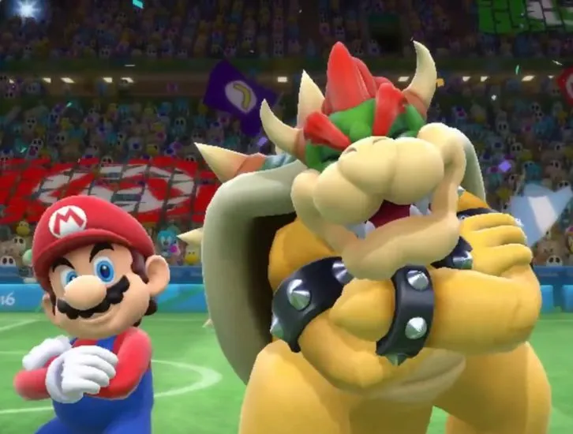

¿Los personajes de la Saga de Super Mario son actores?
Si bien Shigeru Miyamoto, creador del Super Mario, ya confirmó que Super Mario 3 es efectivamente una obra de teatro, la teoría se extendió al resto de la franquicia. Y es que los fanáticos encontraron pruebas en cosas muy específicas. La primera de ellas es que, en Super Mario 2, la pantalla de selección de personaje presenta un telón abierto y el mensaje indica: “Please select a player”, y player puede significar jugador o actor en inglés.
Pero la del Super Mario 2 es el primer caso de muchos otros, a esto se le suma que en Super Mario 64 y en Mario Tennis puede verse a un Lakitu con una cámara de grabación siguiendo al protagonista por el juego. En Mario Power Tennis hay una sección de “bloopers” en donde se muestran a los protagonistas en un ambiente y estado más relajado.
Por otro lado, lo que afirma la teoría de que los personajes de la Saga Super Mario son actores es que los niveles de Super Mario 64 y Super Mario Galaxy están divididos en episodios, como si fuera un serie de televisión. Además, en la última iteración del juego, Super Mario Odyssey, el protagonista puede entrar en un cine en el área de New Donk City, en el cual se está emitiendo el primer juego de la saga, al cual el jugador puede entrar y jugarlo para los presentes en la sala.
En un nivel más general, la duda más importante es ¿por qué los personajes de la franquicia parecen no mantener las mismas relaciones a lo largo de los diferentes títulos? En algunos juegos Bowser es el antagonista, sin embargo, en otros parece no tener problemas en compartir el mismo espacio con Mario y los demás, como en los juegos de deporte o los Mario Party, e incluso es uno de los buenos en Super Mario RPG. Todas estas cosas, sumadas a los comentarios de Miyamoto, apuntan a que quizás los personajes son simplemente actores que toman un rol diferente para cada juego, cada uno con un guión diferente.